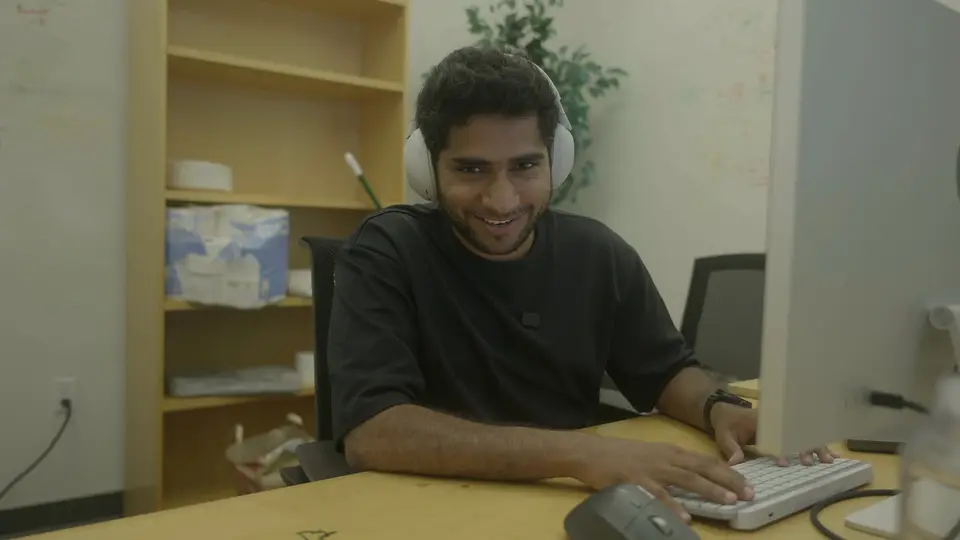
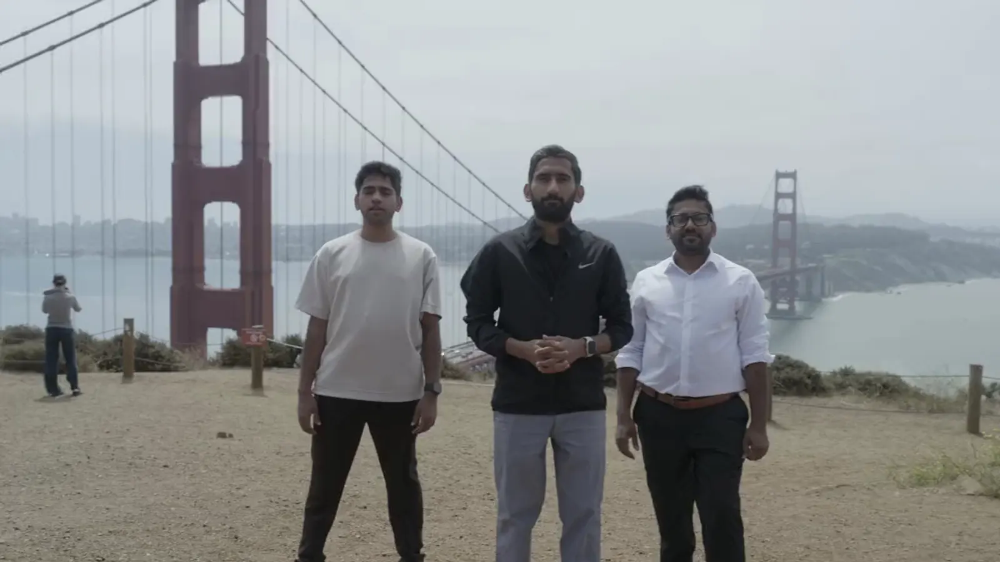
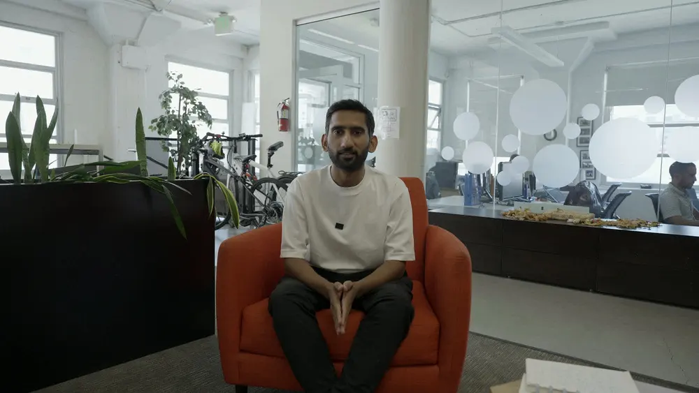
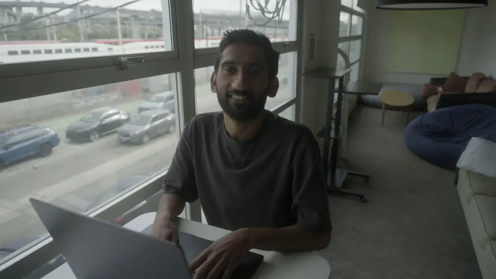

Own a product used by millions.In your first year.
ImagineArt is hiring Associate Product Managers in Islamabad, for final-year students and recent graduates. You will own part of the product, ship it to real users, and be judged on what happens next.
Made with ImagineArt, from the imagine.art homepage.
As published on imagine.art/about, Sep 2026
Eight products, one workspace. Pick the one you want to own.
Every tile below is a live product with real users on the other side, and every frame on it was made with ImagineArt. You will be handed a piece of one of them, not a slide deck about it.
The curve is the point. Here is what it looks like.
Three curves. The role you hold, the scope you own, and the company you are inside. The line on this page is drawing them.
A surface or a feature, end to end. You write the spec, the copy and the launch note. You ship weekly and you read what happened.
A product line with a roadmap, a small team of engineers and a designer who sits next to you.
A business line with a number attached to it, and more than one squad shipping against it.
A whole product area. You hire and grow the PMs who own the lines.
- Year 1Associate Product Manager
A surface or a feature, end to end. You write the spec, the copy and the launch note. You ship weekly and you read what happened.
- Years 2–3Product Manager
A product line with a roadmap, a small team of engineers and a designer who sits next to you.
- Years 3–5Senior Product Manager
A business line with a number attached to it, and more than one squad shipping against it.
- Year 5+Group Product Manager
A whole product area. You hire and grow the PMs who own the lines.
What you own, and when.
- Week 1
You get a surface, a designer, and access to the numbers. You ship something small before Friday.
- Day 30
You have talked to users yourself and changed something because of it.
- Day 90
You own a roadmap for your surface and defend it in the room.
- Month 6
A feature you led is in the product and you can point to what it moved.
- Year 1
You are the person the team looks to when your surface feels off. That is the job.
Where the line has been.
Bootstrapped, no major funding rounds. Public milestones, each linked to its source.
- 2022
ImagineArt launches as a text-to-image app on web, Android and iOS, built by a small independent team with no major funding. source ↗
- 2024
Video generation arrives and the first in-house model family ships. Image, video and more come together in one workspace. source ↗
- Sep 2025
ImagineArt 1.0, the first fully in-house image model, becomes the platform default. ImagineArt 1.5 follows and places third on AI Arena. source ↗
- Late 2025
Apps and the node-based Workflows canvas launch alongside ImagineArt 2.0. source ↗
- May 2026
Film Studio and Ad Studio launch: storyboards and camera control for long-form work, and product links turned into finished ads. source ↗
- Jun 2026
Imagine MCP connects ImagineArt to Claude, Cursor and other agents. The Imagine Plugin brings generation into the editing timeline. source ↗
- Aug 2026
Fashion Studio launches, then Imagine Computer: an agent that plans and carries out creative work across tools. source ↗

You will be working on something people write about.
- TechJuicePakistani Startup Vyro AI Releases ImagineArt 1.5, Sets New Bar for Photoreal-AI
- TechJuicePakistani Startup Successfully Surpasses Leading AI Image Generators in Photorealism
- We Talk StartupsBootstrapped Pakistani AI Startup Vyro.ai Beats Global Giants in Image Generation RankingsNov 2025
- Klever ContentImagineArt by Vyro.ai Ranks Among the World's Top 3 Text-to-Image Models
- GadinsiderPakistan's ImagineArt recognised as 'world's most realistic' AI image generator
- Think with GoogleVyro AI's app roadmap to grow profitably
- StripeVyro uses Stripe to power global expansion of its AI SaaS platform
- Unite.AI10 Best AI Art Generators: ImagineArt listed firstSep 2026
- Artificial AnalysisImagineArt's own models on the text-to-image leaderboard
- FinancialContentImagineArt Launches Imagine Computer, Bringing Agentic AI to Creative WorkflowsAug 2026
- FinancialContentImagineArt Launches AI Fashion StudioAug 2026
- FilmoraImagineArt 2026 Review: Features, Pricing & More
Small teams, real users, no layers.
- 01
The spec is yours.
You write it, you defend it, you ship it. Nobody hands you tickets.
- 02
You talk to users.
Not a research team on your behalf. Creators, marketers and studios use this product every day and they will tell you what is wrong.
- 03
Ship, then learn.
Small releases, real users, fast iteration. The product changes every week and you will be one of the reasons.
- 04
Design sits next to you.
PMs and designers pair from the first sketch. No hand-offs, no ticket queues between you.
- 05
Numbers are the story.
Activation, retention, revenue. You will read them, and you will be asked what you did about them.
- 06
No layers.
You talk to product leadership and the founders directly. If something needs deciding, it gets decided.
Built in Islamabad. Shipped to the world.
The product team sits in Islamabad. The company sells in San Francisco and to creators everywhere. The strongest people here get to travel with the product: to the SF office, and to the events where the industry meets.



Great compensation, in Islamabad.
We say the number in the first conversation, so nobody wastes a month finding out.
A chance to work from the SF office.
Earned, not scheduled. The people who ship the most get the most rope.
International events and conferences.
Where the industry meets, the team goes. Bring a notebook.
Products serving millions.
Nothing you ship here is a toy. It goes to real users the day it's ready.
- You have built something nobody asked you to build.
- You would rather ship a rough version this week than a perfect one next quarter.
- You read the numbers before the opinions.
- You want to be in the room, in Islamabad, with the people building it.
- You want the role defined before you will act on it.
- You want to be told what to build.
- You think product means writing tickets.
- You are waiting for a manager to notice you.
Apply now.
The application takes about five minutes. Include a link to something you built or made; it is what we read most closely.
Questions
Final-year students and graduates up to one year out, from any university, who have built something worth showing.
Yes. The product team works from the Islamabad office. This is a job you do in the room.
You are handed a surface of the product and you own it: the spec, the copy, the launch, the numbers afterwards. You work with a designer and engineers directly. There is no layer between you and the users.
Great for Islamabad, and we tell you the number in the first conversation rather than at the end.
Vyro has an office in San Francisco. The people who ship the most get the chance to work from it and to attend international events with the team. It is earned.
You hear back within two weeks of applying. From first conversation to offer is usually a few weeks.
No. You need to have built or shipped something, and to be able to explain why you made the choices you made.
Yes, and we will ask you how. We build AI products; we would be surprised if you didn't.
Through the application form linked on this page. It opens on Ashby, the system we use for hiring.